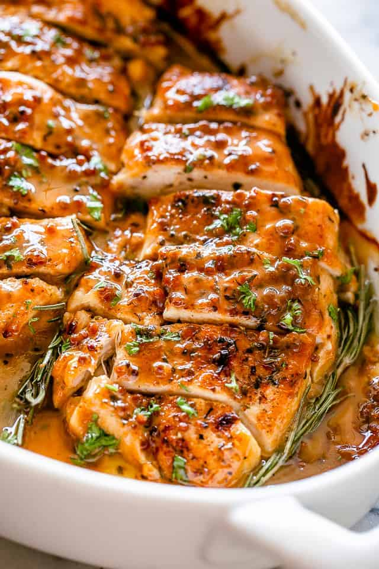

Honey Mustard Chicken

Beautiful, tasty honey mustard chicken
Ingredients:
- 4 boneless, skinless chicken breasts
- 3 tablespoons Dijon mustard
- 2 tablespoons honey
- 1 tablespoon olive oil
- 2 cloves garlic, minced
- 1 teaspoon dried thyme (or any other dried herbs you prefer)
- Salt and black pepper to taste
- Fresh parsley, chopped (optional, for garnish)
Steps:
- Preheat your oven to 375°F (190°C).
-
In a bowl, mix together Dijon mustard, honey, olive oil, minced garlic,
dried thyme, salt, and black pepper until well combined.
-
Place the chicken breasts in a baking dish or a lined baking sheet.
-
Pour the honey mustard mixture over the chicken, ensuring each piece is
evenly coated.
-
Bake the chicken in the preheated oven for about 20-25 minutes or until
the chicken is cooked through and reaches an internal temperature of
165°F (74°C).
-
Optional: If desired, you can broil the chicken for an additional 1-2
minutes to give it a slightly golden and caramelized finish.
-
Once the chicken is done, remove it from the oven and let it rest for a
minute or two.
-
Garnish with chopped fresh parsley for added freshness and presentation.